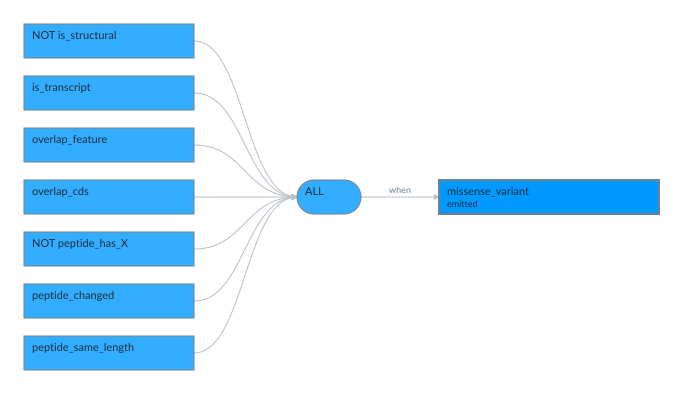
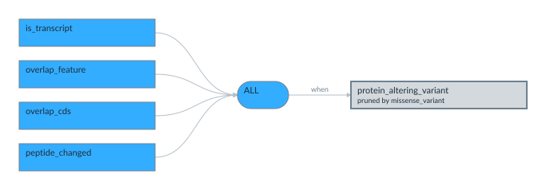
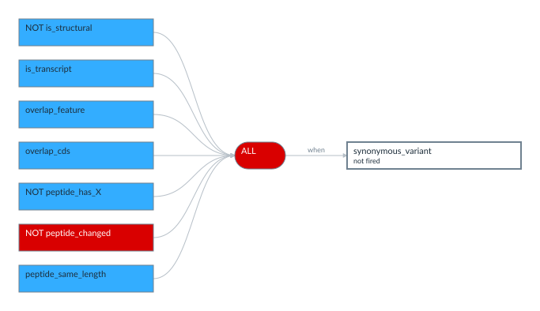

Explaining a consequence call#
vep explain shows how Ensembl VEP decided the consequences of one variant on one transcript: which properties of the variant it computed, which consequence rules were true, and which terms were removed in favour of more specific ones. In this tutorial you explain a missense call from the example data, then compare two annotators on the same variant.
The tutorial uses the example data included in the repository. Follow the source installation instructions, then run the commands from the root of the ensembl-vep-py repository. To keep the commands short, store the input options in a configuration file first:
cat > explain.toml <<'TOML'
[source]
input_file = "examples/homo_sapiens/homo_sapiens_GRCh38.vcf"
gtf = "examples/homo_sapiens/genes.gtf.bgz"
fasta = "examples/homo_sapiens/unmasked.fa.bgz"
TOML
Find the overlap to explain#
vep explain explains one overlap: one variant allele against one transcript. --list prints every overlap in the input, numbered:
vep explain --config explain.toml --list
[ 0] rs7289170 ENST00000696220
[ 1] rs7289170 ENST00000696221
[ 2] rs7289170 ENST00000696222
...
The variant rs2231495 overlaps 31 transcripts. This tutorial explains its overlap with the transcript ENST00000262607.
Explain the overlap#
Select one overlap by naming the variant and the transcript. A variant can be named by its position and alleles (22:17188416:T>C) or by its position and the ID in the input file (22:17188416:rs2231495):
vep explain --config explain.toml --variant 22:17188416:rs2231495 --transcript ENST00000262607
Without --transcript, a variant that overlaps several transcripts is refused with a list of the transcripts to choose from. --index selects an overlap by its number in the --list output instead.
Read the explanation#
The explanation starts with a summary of where the variant falls in the transcript:
summary:
variant 22:17188416 T>C (id rs2231495, alternate allele 1 of 1, input 17188416 T/C)
transcript ENST00000262607 (17178790-17209889, strand -, protein_coding, gene ENSG00000093072)
location exon 6/9
...
codons cAt/cGt
amino acids H/R
The variant changes the codon CAT to CGT, so the histidine at protein position 335 becomes an arginine.
Next come the facts: named properties of this variant against this transcript, such as overlap_cds (the variant overlaps the coding sequence). Each line shows the fact’s value, how it was obtained and how often the rules read it:
facts: 39 computed (cost 495), 0 prefilled, 10 forced False (cost 30 avoided), 0 cache hits, 106 reads
is_transcript True computed FREE x20
overlap_feature True computed BOUNDS x16
overlap_cds True computed MAPPING x7
peptide_changed True computed SEQUENCE x1
...
overlap_donor_site False forced False via overlap_intron_boundary
A fact marked forced False was never computed: a fact it depends on was already false. Here the variant does not touch an intron boundary, so it cannot touch a splice donor site.
Then come the rules, one per consequence term, in severity order. Each rule says whether it fired and how it was settled:
rules:
[ 1] transcript_ablation FALSE settled early: is_structural=False
...
[ 13] missense_variant FIRED fell through to full evaluation (needed expensive tier)
[ 14] protein_altering_variant FIRED fell through to full evaluation (needed expensive tier)
[ 23] coding_sequence_variant FIRED fell through to full evaluation (needed expensive tier)
[ 31] coding_transcript_variant FIRED settled early: (is_transcript & overlap_feature & biotype_protein_coding)
Four rules fired, but they are not all reported. A more specific term removes the general terms it subsumes, and the last two lines show this pruning and the result:
pruned: coding_sequence_variant <- subsumed by missense_variant; protein_altering_variant <- subsumed by missense_variant; ...
emitted: missense_variant
So the consequence of rs2231495 on ENST00000262607 is missense_variant. The rule of every term is listed in the consequence terms reference.
Draw the derivation#
--graph draws each rule as a diagram of its expression. With an SVG graph, the output is an HTML page you can open in a web browser:
vep explain --config explain.toml --variant 22:17188416:rs2231495 --transcript ENST00000262607 \
--graph --output_file derivation.html
Open the full derivation page for this overlap. It shows the emitted terms first, then the terms that fired but were pruned, then the terms that did not fire, each in severity order.
Each diagram reads from left to right. The facts the rule uses are on the left, joined by the operators of the rule’s expression (ALL, ANY and NOT), and the consequence term is on the right. The fill of each box shows its state:
Box |
Fill |
Meaning |
|---|---|---|
Fact or operator |
light blue |
true for this overlap |
Fact or operator |
red |
false for this overlap |
Fact or operator |
white |
never computed: the rule was settled without it |
Term |
blue |
fired and emitted |
Term |
grey |
fired, but pruned by a more specific term |
Term |
white |
did not fire |
The line under the term name repeats its outcome, such as emitted or pruned by missense_variant.
An emitted term#
Every fact in the missense_variant rule is true, so the rule fires, and nothing more specific subsumes it, so it is emitted:

A term that fired but was not emitted#
The protein_altering_variant rule is also true for this overlap, but missense_variant subsumes it, so it is pruned:

A term that never fired#
The synonymous_variant rule shares most of its facts with missense_variant, but needs the peptide to be unchanged. peptide_changed is true, so NOT peptide_changed is false and the rule does not fire:

In the full page, some rules that did not fire also have white facts. For example, stop_gained never computed cds_stop_gain: another part of its expression was already false, so the result could not change.
Compare two annotators#
Ensembl VEP has several annotators that compute consequences in different ways, and all of them must give the same terms. --compare explains the overlap with two annotators and reports the first point where they differ:
vep explain --config explain.toml --variant 22:17188416:rs2231495 --transcript ENST00000262607 \
--compare consequence.linear,consequence.columnar-staged
comparing consequence.linear vs consequence.columnar-staged
emitted terms AGREE: ['missense_variant']
no rule-verdict divergence among the rules both traces recorded
Next steps#
The
vep explainreference lists every option, including--output_formatfor text, SVG, Graphvizdotand Mermaid output.